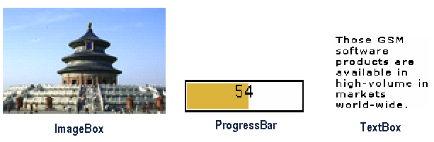
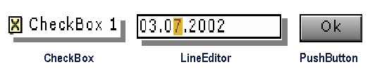
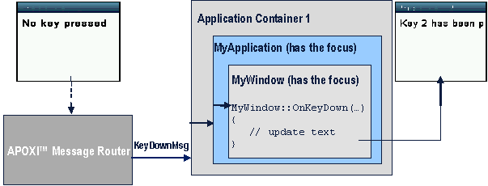
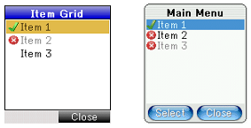

GUI Overview
1 Introduction
The main features of APOXI GUI are:
The document gives an overview of the APOXI-GUI-framework.
2 Application and Window
Two main parts of the APOXI-GUI-framework are the classes Application and Window. APOXI windows have the same features as windows known from modern operating systems on desktop personal computers:
An application may contain a variable number of windows. The drawing of the window and its content is done on a so called device-context. A device-context is implemented by the class DeviceContext and represents an abstract drawing area, with defined colors for pens and brushes, text-attributes and raster-operations.
It is very important to be aware that a window always belongs to one application and may not be accessed in a
direct manner from other applications. This is because each application might run in its own thread. As a thumb
rule:
Applications may only communicate with each other by posting messages. Direct access to the data of another
application is not allowed.
3 Components
Every graphical object is derived from the class Component, which represents a graphical object with a rectangle as boundaries. Every component is able to handle and route messages. There are two groups of components, they are:
3.1 Drawable Objects
Drawable objects are represented by the class DrawableObject, which is the base for all graphical objects, which do not interact with the user but receive messages. They can be drawn and have boundaries but have no distinction between frame and client area and cannot have focus. The classes ImageBox, ProgressBar and TextBox are examples for drawable objects.
 |
Figure 1. Drawable Objects
3.2 Controls
Controls are represented by the class Control and can have one or more child-components which are layouted inside the control. A control can be drawn and has a distinction between a frame-area and a client-area. Messages send to a control are handled by the parent-control first and then forwarded to potential childcomponents. Controls can get the focus and hence interact with the user, as all key-messages are forwarded to the focused control. The classes CheckBoxControl, LineEditor and PushButton are examples for controls.
 |
Figure 2. Controls
3.2.1 Window
The class Window extends the class Control and has the following additional optional features:
Opening a Window Modal vs. Opening Modeless
A window can be opened modal by invoking Window::OpenModal() or modeless by invoking Window::OpenModeless().
statement 1;
align="justify" class="Stil12">win.OpenModal();
align="justify" class="Stil12">statement 2;
In this case statement 1 is executed and the window is opened modeless. Statement 2 will be executed immediately after Window has been opened.
statement 1;
align="justify" class="Stil6">win.OpenModal();
align="justify" class="Stil6">statement 2;
Now statement 1 is executed and the window is opened modal. Statement 2 is executed only after the window has been closed.
3.3 Sample Application
The following implementation of a sample application should convey a feeling of APOXI.
3.3.1 Displaying "Hello World"
In order to write a "Hello world"-application on the mobile phone, a window needs to be created for drawing a text. The header-file for the class MyWindow is shown in the following:
#if !defined(Mmi_MyWindow_hpp)
#define Mmi_MyWindow_hpp
#include <GuiExtensions/MmiWindow.hpp>
class MyWindow : public Window
{
typedef MmiWindow Base;
protected:
virtual void OnPaint(const Rect& repaint_rect);
};
#endif // Mmi_MyWindow_hpp
3.3.2 The Implementation of MyWindow
The drawing of a window is done on the device context. All drawing operations done on the device context, which represents an abstract drawing area and has defined colors for pens and brushes, text-attributes and rasteroperations. Device context of control is retrieved via GetDeviceContext() and PaintDc provides comfortable usage of a standard device context. The MyWindow.cpp for "Hello World" is given in the following code:
#include "MyWindow.hpp"
void MyWindow::OnPaint(const Rect& repaint_rect)
{
Base::OnPaint(repaint_rect);
PaintDc pdc(GetDeviceContext());
pdc.DrawText(5, 10, Tr(L"Hello world"));
}
Windows also need to be embedded in a common context, which is provided by an application. So before opening any window, an application must be created.This application class should be derived from Application.
3.4 Getting Multilingual
In general, the usage of hardcoded strings should be avoided, because applications should support different languages. For this multilingual support, programmer simply has to pass all texts to the Tr()-method ("Translate") before displaying them. This performs fast lookup within current translation table and returns the translated string literal corresponding to the argument. If no translation table is provided, then the argument itself will be returned. E.g. Instead of L"Hello world" , Tr(L"Hello world") should be used as shown in the MyWindow.cpp example code.
3.5 Handling key events
Handling of a key event in APOXI is shown in the following figure.
 |
Figure 3. Handling key event
The method Window::OnKeyDown() is invoked whenever a key has been pressed. In the example shown in figure 3 , when the window is opened MyWindow::OnPaint() is called and "No key pressed" is displayed. Pressing the key "2" invokes a call of MyWindow::OnKeyDown(). In MyWindow::OnKeyDown() the text in the MyWindow will be updated to display “Key 2 has been pressed”.
When changing data which should be displayed, the window must be invalidated to trigger a paint-event. This can be done by invoking Window::Invalidate(). Window::OnKeyDown() offers a BOOLEAN as return-value, which indicates whether a key has been dispatched. If the key is not treated, the base-method should be called.
3.6 Items
A lot of GUI controls like menus and lists use items for specifying their content. An Item is at least represented by a text and/or an icon. The drawing of the item properties (like the text or icon) is not done by the item itself but usually by a GUI-control (e. g. ItemMenu or ItemGrid). When creating an item it will be assigned to this control and the item informs the control when an item property like the text has been changed, so that the control can redraw itself to show the changed item properties. The benefit for the application developer is that it is possible to modify the item without the need of taking care which GUI-components must be updated, as this is done automatically.
The following example shows two windows which contains an ItemGrid and Item-menu with 3 embedded items:
 |
Figure 4. Item Grid
3.6.1 AbstractItemContainer and ItemContainer
The class AbstractItemContainer is derived from Item and extends the item by an interface for embedding a variable number of items as part of the item-container. The class ItemContainer offers a default implementation and might be used for building a menu-hierarchy which might be displayed by the controls ItemMenu or ItemTree.
3.6.2 Actions
In GUI applications, various user events can be triggered by Menu entry, Button, Softkey etc. Actions bundle logical behaviour and graphical representation. Actions can be attached to Dispatchers (Application, Window, etc.). Dispatchers are informed with ActionExecutedMsg and if action is executed (only if dispatcher is a Window) OnActionExecuted(Action* action) is called.
Some predefined actions for common use cases are given in the following:
3.7 Device Context
All drawing operations in APOXI are done on the device context, which is represented by the class DeviceContext. A device-context offers methods for drawing lines, rectangles, text and much more. All drawing methods use the current set color, text-format and other attributes which may be modified for each instance of the class DeviceContext. All operations on a device-context must be encapsulated between BeginUpdate() and EndUpdate().